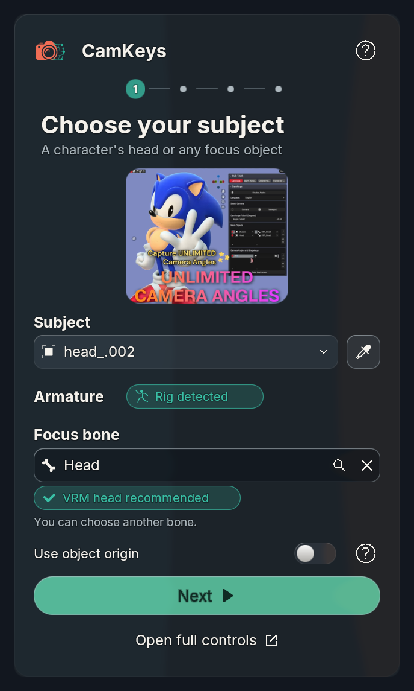
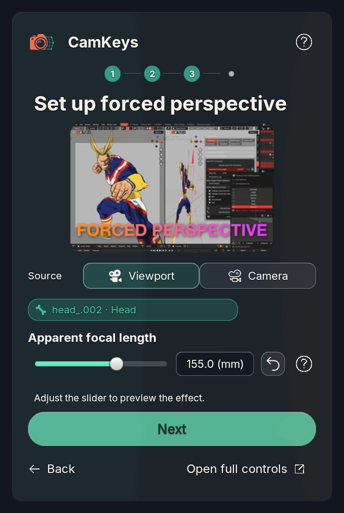
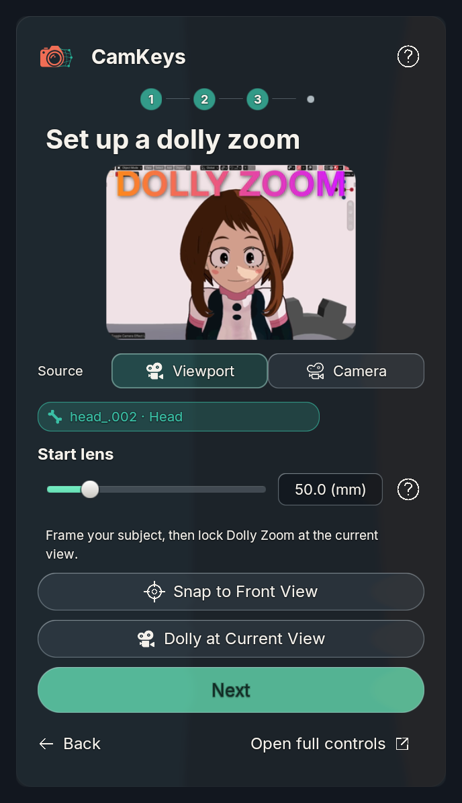
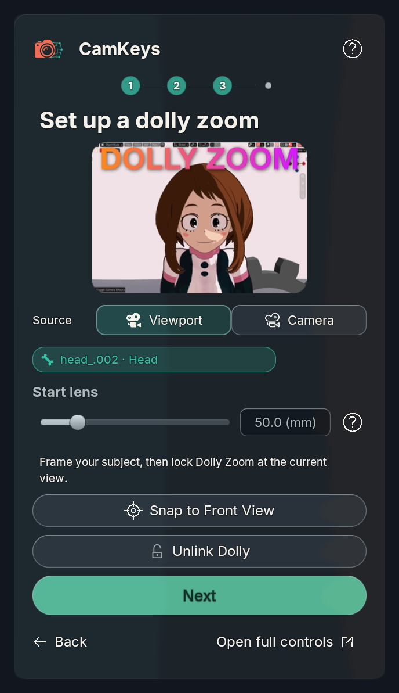

2026-11-03 · Overview and estimate
New Forced Perspective settings now start unlocked, allowing apparent focal lengths below the real view lens in the full UI and wizard. Explicit saved lock choices remain intact. Blender 5.2.2 execution check.
Preparing the first effect keeps onboarding active. Older saved stages recover preparation on the next action. Snap uses the subject's local −Y front, fits approximately 75% of the frame, and retains local Z up.
Dolly at Current View becomes Unlink Dolly with an open-padlock icon while active. Unlink uses the main UI callback to restore the original recorded focal length and captured distance, preserving its external-edit ownership guard. Free orthographic viewports switch to perspective before capturing Dolly, Pincushion or Tangential locks; failed capture restores orthographic projection. Camera datablock projection is not changed.
The reset accessory targets the wizard subject and reuses the full-panel focal reset operator. Reset and help buttons align with the editable value. New labels and tooltips are covered by 140 setup/help messages in 12 languages.
Blender 5.1.2 and 5.2.2 execution passed, including real geometry updates, stale-state recovery, front direction, camera framing, lock/unlink and rollback. 453 BUI unit tests pass. Physical Windows and Blender 4.2 execution of these changes remain unverified.
Actual Metal component captures use the saved Uraraka scene bindings over a controlled shared glass backdrop. These are not live-sidebar screenshots. The installed files are updated; the dirty live scene was not saved or its running evaluator replaced. Restart Blender to load the changes in that session.




5.1.2 checks · 5.2.2 checks · Locale checks · GPU capture evidence · Focus audits